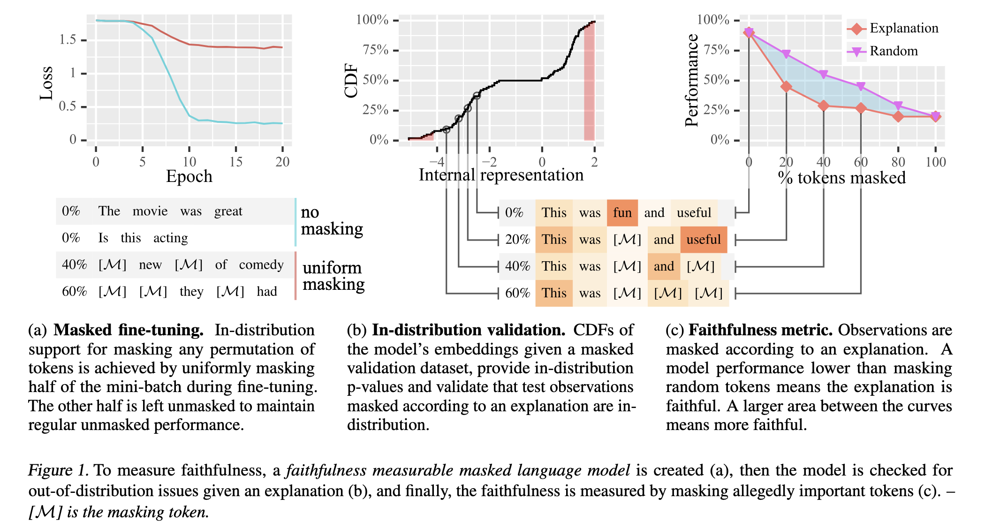

Learning Robust Rationales for Model Explainability: A Guidance-Based Approach
AAAI 2024背景
NLP 里常用重要性度量（IM）来解释模型：给每个输入 token 打分，说明它对预测有多重要。常见的有梯度、积分梯度、Leave-one-out 等。
问题是这些解释经常看起来有道理，实际上是错的，有时甚至不比随机挑 token 强。所以需要衡量解释的忠实度（faithfulness）：解释是否真实反映了模型的推理过程（Jacovi & Goldberg, 2020）。
- 难点是没有标准答案，只能借助代理指标。最常用的是擦除指标（Samek 等, 2017）：真正重要的 token 被遮挡后，性能下降应比遮挡随机 token 更明显。
- 但遮挡会制造分布外（OOD）输入。以往的补救是遮挡后重训模型（ROAR），代价是计算昂贵、泄露金标签，而且被测的已不是原模型。
贡献
- 提出内在可测忠实度模型（FMM）。思路从“设计一个对所有模型通用的评估方法”转向“让模型本身天生支持忠实度测量”。它不同于内在可解释模型：FMM 不保证解释存在，但提供了测量手段。
- 掩码微调（masked fine-tuning）：用一种简单的微调方式，让任意比例的 mask 都成为分布内输入，同时不损失正常性能。
方法

(a) 掩码微调
- 每个mini-batch里一半样本保持原样，用来维持正常的无 mask 性能。
- 另一半的每条样本先从 U(0,1) 采样一个掩码率 r，再让每个 token 以概率 r 被替换成 [MASK]。这样 0% 到 100% 的各种比例和组合都会出现。
- 验证集复制成两份，一份不 mask、一份随机 mask，用来选最优epoch。
(b) 分布内验证
对输入句子算一个p 值，用统计检验确认被遮挡后的输入没有 OOD。具体做法是用遮挡后的验证集的模型嵌入构造累积分布函数（CDF），再检查测试样本是否落在合理范围内。
(c) 忠实度指标
- 对输入计算 IM，mask 掉最重要的 10% token。
- 在已 mask 的输入上重新计算 IM，再 mask 掉新的最重要的 10%。
- 重复直到 100%，记录每一步的模型性能，得到一条曲线。
- 用随机解释跑同样流程，得到随机基线曲线。
怎么衡量可解释性
定性：看曲线（论文 Figure 5 / 附录 K）。横轴是 mask 比例，纵轴是模型性能。IM 曲线压在随机曲线下方，就说明解释忠实。
定量：ACU 与 RACU（公式 3，Figure 6）。
ACU：IM 曲线与随机曲线之间的面积，用梯形法累加。
ACU =Σ ½·Δxi·(Δpi + Δpi+1)， Δpi = bi − pi（随机曲线 − IM 曲线）
RACU：用“理论最优解释”归一化。理论最优解释指 mask 第一步就把性能打到 100% mask 的水平；分母是随机曲线与 100% mask 性能水平线之间的面积。
RACU =ACU / Σ ½·Δxi·(Δbi + Δbi+1)， Δbi = bi − bI